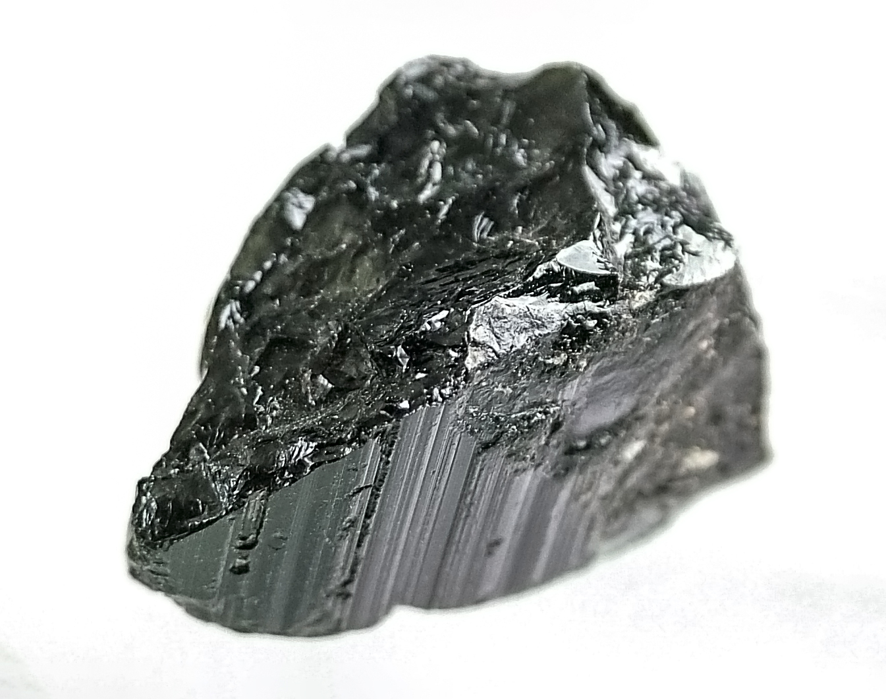

Ligurius
Ligurius, also called Lyncurius, Lyncurium, Lyngurium, and Ligure, forms when lynx urine hardens into stone. ² ³ ⁹ ¹⁰ It is usually yellow or brown, though red, dark saffron, and green kinds are also described. Rubbed or warmed, it attracts straw and leaves. ¹ ² ⁴ The green kind heals stomach pains, jaundice, bleeding, and the king’s evil. ³ ⁵
The lynx hides its urine beneath the sand, jealous that people might use the precious stone it forms. ⁶ ⁷ ⁸
Generic
Description
Ligurius is hot and forms from certain, but not all, lynx urine. ¹ ² ³ ⁵ ⁶ ⁷ ⁸ ¹⁰ ¹¹ ¹² When the sun is very hot and the breeze light and gentle, the lynx digs a hole, releases the urine into it, and the sun’s heat coagulates it into stone. ³ The lynx buries it beneath sand. ⁴ Other accounts say that the urine hardens in air, crystallizes, or hardens into a precious stone in the lands where lynxes live. ⁹ ¹⁰ ¹¹ ¹² It is usually yellow like Amber or dark brownish yellow, though one kind is red and sparkling like a Carbuncle, another is dark saffron-colored, and a third is green. ¹ The green kind has its own virtues.
One account distinguishes another lynx-stone, Lyncis, from Lyncurius. ⁵ Lyncis is white mixed with black, soft while buried and hard when dried in an arid place; ⁵ when kept in moist earth it produces mushrooms. Its name is similar, but it is treated as a distinct stone.
Properties
Rubbed, Ligurius attracts straw; ¹ ⁴ ⁵ yellow lyncurius also draws nearby leaves. ² A form of Ligurius is said to resemble Electorius, and it too attracts straw. ⁵
The stone relieves pain in the stomach, chest, and belly, and is said to cure jaundice and diarrhea. ¹ ⁵ For severe stomach pain, place it briefly in wine, beer, or water, then remove it. ³ Let the patient drink this liquid in moderation after eating a little, never while fasting, and repeat this treatment for fifteen days. ³ It is for stomach pain alone: another person who drinks it may suffer injury to the heart and a splitting headache, and may not survive. ³ One account says that the stone should be worn to arrest diarrhea. ⁴
For difficult urination, place the stone in cow’s or sheep’s milk, never goat’s milk, for one day. ³ On the second day remove the stone, warm the milk, and sip it; ³ repeat this for five days to loosen the urine. ³ Ligurius also sharpens sight and is used by physicians in eyedrop preparations. ⁵
Engraving and adornment
Lyngurium is suitable for engraving and serves as an aid to women’s adornment. ¹¹
Variants
| Form | Appearance and properties | Sources |
|---|---|---|
| Subtype I: Red Carbuncle-Like Kind | Sparkling red like a Carbuncle, but it does not shine at night. ¹ ⁵ | ¹, ⁵ |
| Subtype II: Dark Saffron Kind | Dark and saffron-colored. ⁵ | ⁵ |
| Subtype III: Green Lyncurius | Heals stomach pains and jaundice, staunches blood, and helps against the king’s evil. ⁵ | ⁵ |
Subtype I: Red Carbuncle-Like Kind
This kind sparkles red like a Carbuncle, but it does not shine at night. ¹ ⁵
Subtype II: Dark Saffron Kind
This kind is dark and saffron-colored. ⁵
Subtype III: Green Lyncurius

The image shows dark green, almost-black tourmaline crystal (source).

The green Lyncurius heals stomach pains and jaundice, staunches the flux of blood, and is useful against the king’s evil. ⁵
Sources
1. St. Albertus Magnus — The Book of Minerals, Tractate II
Ligurius is a stone formed from the urine of the lynx, and Pliny says that these are eastern animals; but nevertheless they are found in great numbers in the forests of Teutonia and Sclavonia. Pliny says that these animals conceal their urine in the sand as if they were envious of the good use which is made of the stone. Bede says that this stone occurs in human kidneys. And Pliny says that it is sparkling red like the carbuncle, except that it does not shine by night. But that more commonly found is of a dark brownish yellow colour. And experience shows that if rubbed it attracts straws, which is a property of nearly all precious stones. And it is said to be good against pains in the stomach, and jaundice, and diarrhoea.
2. St. Isidore of Seville — Etymologies, Book XVI, VIII.8
The lyncurius is so named because it is formed from lynx urine that has hardened with time. Like amber, it is yellow, and it attracts nearby leaves with its spirit.
3. St. Hildegard of Bingen — Physica, XIX. Ligure
Ligure (ligurius) is hot. It is born from particular, but not all, urine of the lynx. The lynx is not a lascivious, libidinous, or unclean animal, but is even-tempered. Having such great power that it even penetrates stones, the lynx has sharp vision, which is rarely obscured. Ligure is not always born from its urine, but only when the sun is very hot and the breeze is light, gentle, and well moderated. This animal sometimes rejoices because of the heat and purity of the sun and the gentleness of the beautiful breeze. When it then emits urine, it digs up the earth with its foot and releases its urine into the hole. The ligure coagulates and develops in the sun’s heat. Both the purity of the sun and gentle breeze, which touched and suffused this animal, and the happy mind of the lynx warm up this powerful urine, which when released congeals into this stone. This coagulation of stone in earth is more delicate than other stones.
A person who suffers greatly in his stomach should put ligure in wine, beer, or water for a little while and then remove it. The liquid will be suffused with the powers of this stone, thus receiving its powers. He should do this for fifteen days. Give it to him to drink in moderation, when he has eaten a little, but not while he is fasting. No fever or disease shall be powerful in his stomach. Rather, it will be purged, purified, and healed, unless death is present. No one else should drink this potion for any reason except stomach pain. He would not be able to live, since its power is so great as to damage his heart and split his head.
But one who is constricted by difficult urination, so that he is unable to make urine, should place ligure in milk for one day. It should be cow or sheep, but not goat, milk. On the second day he should take it out, warm the milk, and then sip it. He should repeat this for five days, and the urine in him will loosen.
4. Marbodus of Rennes — De lapidibus, XXIV
Voided by lynxes, to a precious stone
Congealed the liquid is Lyncunum grown;This knows the lynx and strives with envious pride
'Neath scraped up sand the precious drops to hide.
Surpassing amber in its golden hue
It straws attracts if Theophrast says true:
The tortured chest it cures, their native bloom
Through its kind aid the jaundiced cheeks resume;
And let the patient wear the gem, its force
Will soon arrest the diarrhoea's course.
5. Camillo Leonardi — Speculum Lapidum, Lyncurius and Ligurius
Lyncurius is a stone generated out of the lynx’s urine, hardened by time. It is found where these animals live and especially in parts of Germany. Therefore, it is said there are three species, one of which is sparkly like the carbuncle. The other is saffron colored and tends to be dark. The third is green, and its virtue is that of healing stomach pains: it also heals jaundice, staunches the flux (of blood), and is useful against the king’s evil.
Ligurius, as some say, is similar to the electorius and attracts straw. It appeases stomach pains, halts the flux of the belly, and cures jaundice. It sharpens sight and, because of this, doctors make eyedrop medications with it.
Lyncis, too, is a stone generated by the urine of the animal by the same name, but it is different from the abovementioned, because as long as it is hidden underground it is soft, but when it is put in an arid place, it hardens. It is white in color, mixed with black. And if it is kept underground or in a humid place, before it dries up, it will generate funguses [mushrooms]. Its virtue, and the virtue of its funguses [mushrooms], is to heal those troubled by [kidney] stones. It heals stomach pains, halts the flux of the belly, and cures jaundice.
6. Jacques de Vitry — Historia Hierosolymitana, chapter 88 (Other)
Open local excerpt · Open external source
Those familiar with this animal claim that its urine transforms into a natural gemstone, lyncurius. Being naturally jealous, it goes so far as to hide the greatest quantity of urine in the sand to deprive humans of the benefit of such a product.
7. Thomas of Cantimpré — Liber de natura rerum, Quadrupeds IV.15, IV.58, IV.61 (Other)
Open local excerpt · Open external source
Those who have known the nature of this animal more fully, have said that its urine fuses into the hardness of precious stone. This stone is called ligurian. But out of a kind of natural envy, they hide the liquid released in the sand as far as they can, so that such a stone does not pass into our use.
8. Bartholomaeus Anglicus — De proprietatibus rerum, XVIII.68 (Other)
Open local excerpt · Open external source
his urine changeth and tourneth into a precious stone, that is called Ligurius, & that precious stone is also called Linx, lincis. And this beast Linx hath envie, & is sorie that it should tourne to the use of mankinde, and hideth his urine under ground when hee pisseth, but there it is the sooner hard, & turneth into stone
9. Ovid — Metamorphoses, XV.391–417 (Other)
Open local excerpt · Open external source
Whose urine, shed before it touches Earth,
Congeals in air, and gives to gems their birth.
10. Pliny the Elder — Natural History, VIII.57 (Other)
Open local excerpt · Open external source
The urine of the lynx, in the countries where that animal is produced, either becomes crystallized, or else hardens into a precious stone
11. Aelian — On the Characteristics of Animals, IV.17 (Other)
Open local excerpt · Open external source
The Lynx too hides its urine, for when it hardens it turns to stone and is suitable for engraving, and is one of the aids to female adornment, so they say.
12. Solinus — Polyhistor, II.38 (Other)
Open local excerpt · Open external source
The urine of the lynx is said to collect and harden into precious stones
13. Bartholomaeus Anglicanus — De proprietatibus rerum, Book XVI, Chapter 60: Ligorio
Ligorius is a stone like to Electurus in colour, and has that name, as Isidore says of a beast that is called, Linx. This stone Ligerius is gendered among the gravel of the brine of the beast, and the virtue thereof, draws straw to it self, and helps against ach of the stomach, & staunches flux of the womb, that is grieved. And helps them that have the iaundes, and that be discoloured: for it restores colour, that is lost, as Dioscorides says.
14. Thomas Cantimpre — Liber de natura rerum, Book XIV: “On Precious Stones”, Ligurius — Lynx-stone
Ligurius is one of the twelve stones. It is produced from the urine of a lynx, which hardens into stone. Its colour is fiery and reddish, like carbuncle, except that it does not shine at night, as Pliny says. Evax says that this gem resembles amber, whereas the lapidary says that it is green. Washed in water, it benefits those suffering from constipation, loosens the bowels, restores lost colour to the face, and attracts straws like jet. It is useful for those suffering from stones in the urinary tract.